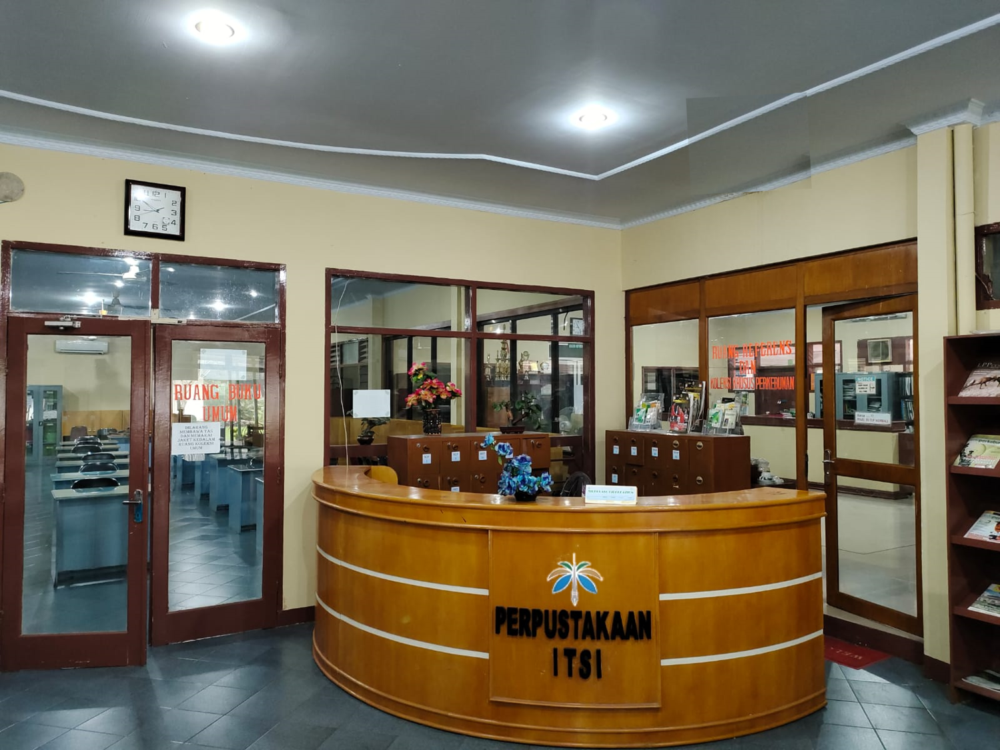
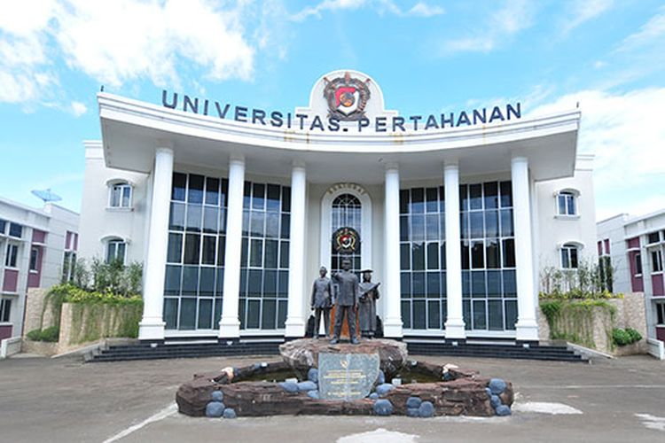

PROFIL PERPUSTAKAAN UNIVERSITAS DI INDONESIA
1. Perpustakaan Institut Teknologi Sawit

Perpustakaan ITSI menyimpan lebih dari 7.420 judul atau 11.996 eksemplar bahan pustaka tercetak. Sesuai dengan fungsinya, Perpustakaan ITSI bertugas sebagai pendukung Tri Dharma Perguruan Tinggi di lingkungan Institut Teknologi Sawit Indonesia.
Alamat : Jl. Rumah Sakit Haji Kecamatan Percut Sei Tuan Kabupaten Deli Serdang, Sumatera Utara 20371
Telp : 061-6637060
E-mail : library@itsi.ac.id
2. Perpustakaan Universitas Udayana

Perpustakaan Unversitas Udayana menyediakan informasi ilmiah dan layanan operasional untuk keperluan pendidikan, penelitian, dan masyarakat ilmiah melalui pengguanaan sarana akses informasi berbasis komputer.
Alamat : Kampus Bukit, Jimbaran, Kec. Kuta Sel., Kabupaten Badung, Bali 80361
Telp : (0361) 702772
E-mail : uptperpustakaan@unud.ac.id
3. Perpustakaan Universitas Pertahanan Republik Indonesia

Perpustakaan Universitas Pertahanan RI merupakan unit pelaksana teknis di bidang perpustakaan yang bertanggung jawab langsung kepada Rektor dan pembinaannya dilakukan oleh Wakil Rektor II Bidang Umum dan Keuangan. Perpustakaan Universitas Pertahanan RI memiliki visi menjadi sumber pusat ilmu pengetahuan dalam bidang ilmu pertahanan dan nilai nilai kebangsaan untuk tercapainya Universitas Pertahanan RI sebagai universitas berstandar kelas dunia.
Alamat : Kawasan IPSC Sentul, Sukahati, Kec. Citeureup, Kabupaten Bogor, Jawa Barat 16810
Telp : 021-7888-123
E-mail : perpustakaan@idu.ac.id